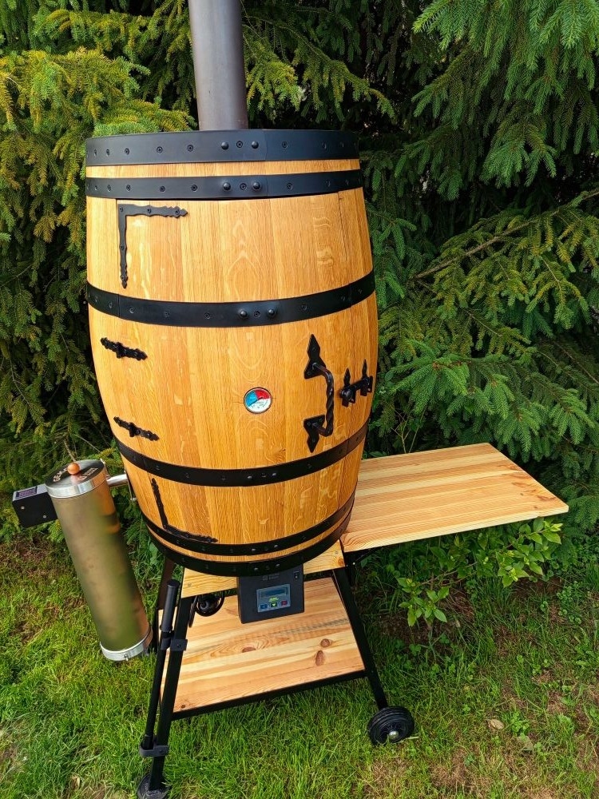
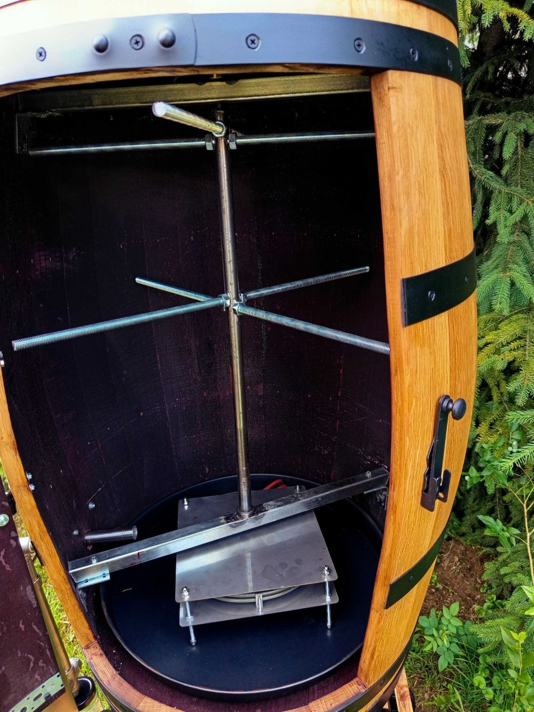
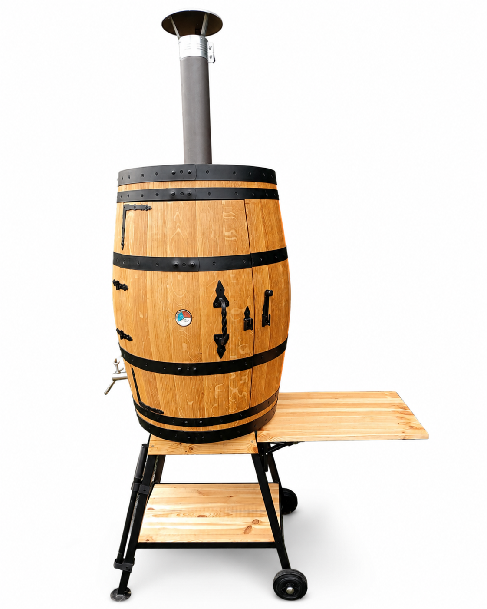
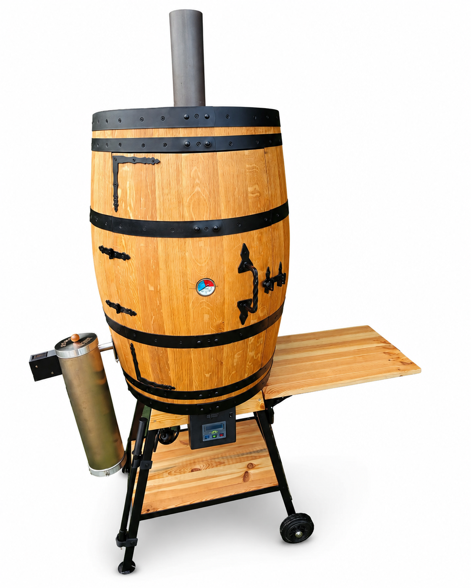
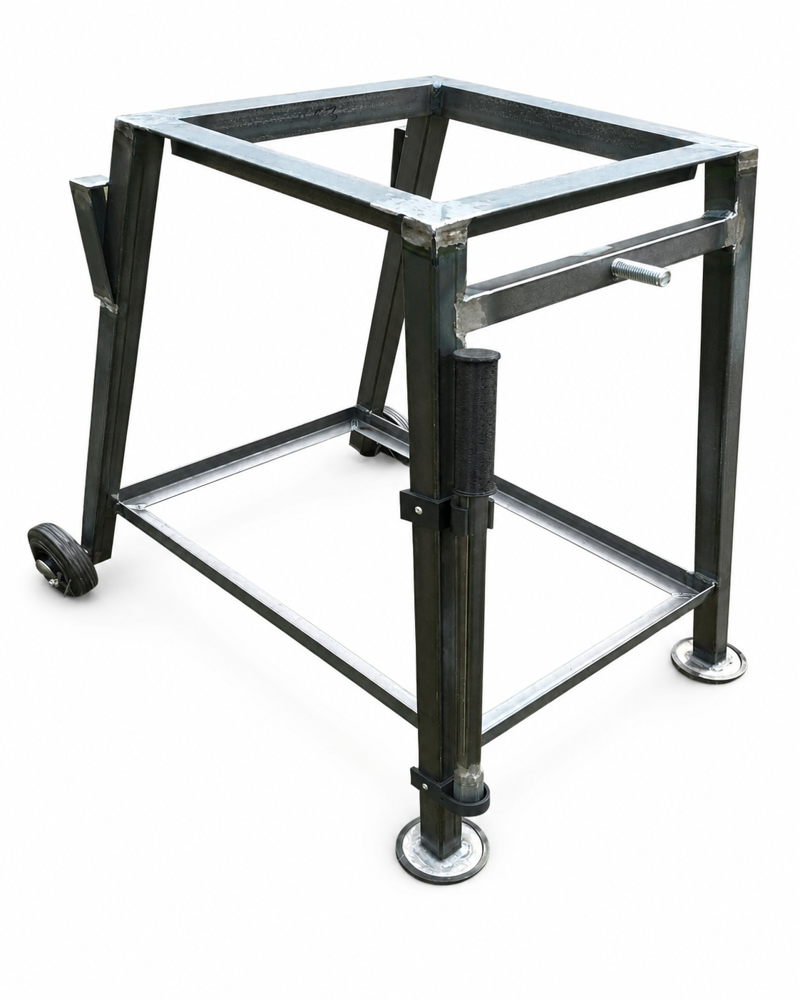

Jednoduché uzení
Praktické řešení navržené tak, aby bylo uzení pohodlné a bez zbytečných komplikací.
Poctivé zpracování, chytré řešení a jednoduché ovládání. Udíte víc, hlídáte míň, užíváte si chuť.

Udírna je navržena tak, aby byla manipulace i samotné používání co nejjednodušší. Stabilní podstavec, kolečka, madlo a odkládací stolek vám usnadní práci při každém uzení.

Vnitřní prostor je navržen tak, aby nabídl dostatek místa a zároveň se snadno udržoval. Otočný systém umožňuje pohodlně zavěsit maso a vyjímatelné části výrazně usnadňují čištění.
Praktické řešení navržené tak, aby bylo uzení pohodlné a bez zbytečných komplikací.
Ručně vyráběná sudová udírna s nezaměnitelným rustikálním vzhledem.
Pevná konstrukce a promyšlené detaily pro každodenní používání.
Po domluvě udírnu dovezeme přímo k vám a předvedeme její používání.

Pro ty, kteří mají generátor kouře vlastní.

Kompletní řešení připravené k okamžitému uzení.

Stabilní a praktický doplněk pro vaši udírnu.
Ozvěte se nám a domluvíme se na všem potřebném. Rádi poradíme s výběrem vhodné varianty.
705 358 844info@udimevsudu.cz